Lab 8 – Tree-based Methods
Philipp Broniecki and Lucas Leemann – Machine Learning 1K
(based on James et al. 2013)
We load post-election survey data from the 2004 British Election Survey.
# clear workspace
rm(list=ls())
library(foreign)
bes <- read.dta("./data/bes.dta")
bes <- na.omit(bes)
# clean in_school
table(bes$in_school)##
## -0.405100243979883 -0.286622836951644 -0.0932005119161492
## 1 1 1
## -0.08278915151733 0 0.0403350016659423
## 1 4120 1
## 0.123419680101826 0.247478125358543 1
## 1 1 34bes$in_school <- ifelse (bes$in_school != 1, 0, bes$in_school)
table(bes$in_school)##
## 0 1
## 4127 34# data manipulation
categcorical <- c("Turnout", "Vote2001", "Gender", "PartyID", "Telephone", "edu15",
"edu16", "edu17", "edu18", "edu19plus", "in_school", "in_uni")
# declare factor variables
bes[, categcorical] <- lapply(bes[, categcorical], factor)Classification Trees
We use trees to classifyrespondents into voters and non-voters.
library(tree)## Warning: package 'tree' was built under R version 3.4.1# build classification tree (- in formula language means except)
t1 <- tree( Turnout ~ . -CivicDutyScores, data = bes)
summary(t1)##
## Classification tree:
## tree(formula = Turnout ~ . - CivicDutyScores, data = bes)
## Variables actually used in tree construction:
## [1] "CivicDutyIndex" "Vote2001" "polinfoindex"
## Number of terminal nodes: 6
## Residual mean deviance: 0.8434 = 3504 / 4155
## Misclassification error rate: 0.1769 = 736 / 4161We can plot the tree using the standard plot function. On every split a condition is printed. The observations in the left branch are those for which the condition is true and the ones on the right are those for which the condition is false.
# plot tree object
plot(t1)
text(t1, pretty = 0)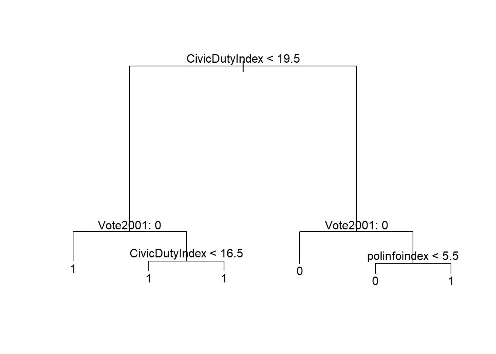
# examin the tree object
t1## node), split, n, deviance, yval, (yprob)
## * denotes terminal node
##
## 1) root 4161 4763.0 1 ( 0.25931 0.74069 )
## 2) CivicDutyIndex < 19.5 3066 2446.0 1 ( 0.13666 0.86334 )
## 4) Vote2001: 0 243 333.4 1 ( 0.44033 0.55967 ) *
## 5) Vote2001: 1 2823 1963.0 1 ( 0.11052 0.88948 )
## 10) CivicDutyIndex < 16.5 1748 950.8 1 ( 0.07723 0.92277 ) *
## 11) CivicDutyIndex > 16.5 1075 961.7 1 ( 0.16465 0.83535 ) *
## 3) CivicDutyIndex > 19.5 1095 1471.0 0 ( 0.60274 0.39726 )
## 6) Vote2001: 0 429 391.4 0 ( 0.82984 0.17016 ) *
## 7) Vote2001: 1 666 918.2 1 ( 0.45646 0.54354 )
## 14) polinfoindex < 5.5 356 483.4 0 ( 0.58427 0.41573 ) *
## 15) polinfoindex > 5.5 310 383.7 1 ( 0.30968 0.69032 ) *Now we use the validation set approach for classification. We split our data and re-grow the tree on the training data.
# initialize random number generator
set.seed(2)
# training/test split
train <- sample(nrow(bes), size = as.integer(nrow(bes)*.66))
bes.test <- bes[ -train, ]
turnout.test <- ifelse( bes$Turnout[-train] == "1", yes = 1, no = 0)
# grow tree on training data
t2 <- tree( Turnout ~ . , data = bes, subset = train)We predict outcomes using the predict() function.
# predict outcomes
t2.pred <- predict(t2, newdata = bes.test, type = "class")
# confusion matrix
table(prediction = t2.pred, truth = turnout.test)## truth
## prediction 0 1
## 0 193 73
## 1 168 981# percent correctly classified
mean( t2.pred == turnout.test )## [1] 0.829682We correctly classify \(83\%\) of the observations. In classification models the Brier Score is often used as as measure of model quality. We estimate it as the average of the squared differences between predicted probabilities and true outcomes. It is, thus, similar to the MSE.
# Brier score
t2.pred <- predict(t2, newdata = bes.test, type = "vector")
head(t2.pred)## 0 1
## 9 0.0403071 0.9596929
## 11 0.1722365 0.8277635
## 16 0.1722365 0.8277635
## 18 0.1722365 0.8277635
## 21 0.0403071 0.9596929
## 25 0.0403071 0.9596929t2.pred <- t2.pred[,2]
# brier score
mean( (t2.pred - turnout.test)^2 )## [1] 0.1292594We turn to cost-complexity pruning to see if we can simplify the tree and thus decrease variance without increasing bias. We use k-fold cross-validation to determine the best size of the tree.
set.seed(3)
cv.t2 <- cv.tree(t2, FUN = prune.misclass)
# illustrate
par(mfrow = c(1, 2))
plot(cv.t2$size, cv.t2$dev, type = "b")
plot(cv.t2$k, cv.t2$dev, type = "b")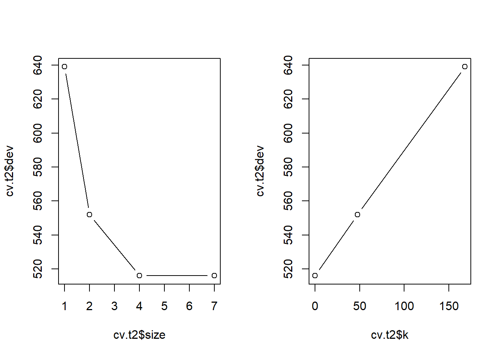
We can prune the tree to four terminal nodes.
# prune the tree (pick the smallest tree that does not substiantially increase error)
prune.t2 <- prune.misclass(t2, best = 4)
par(mfrow = c(1,1))
plot(prune.t2)
text(prune.t2, pretty = 0)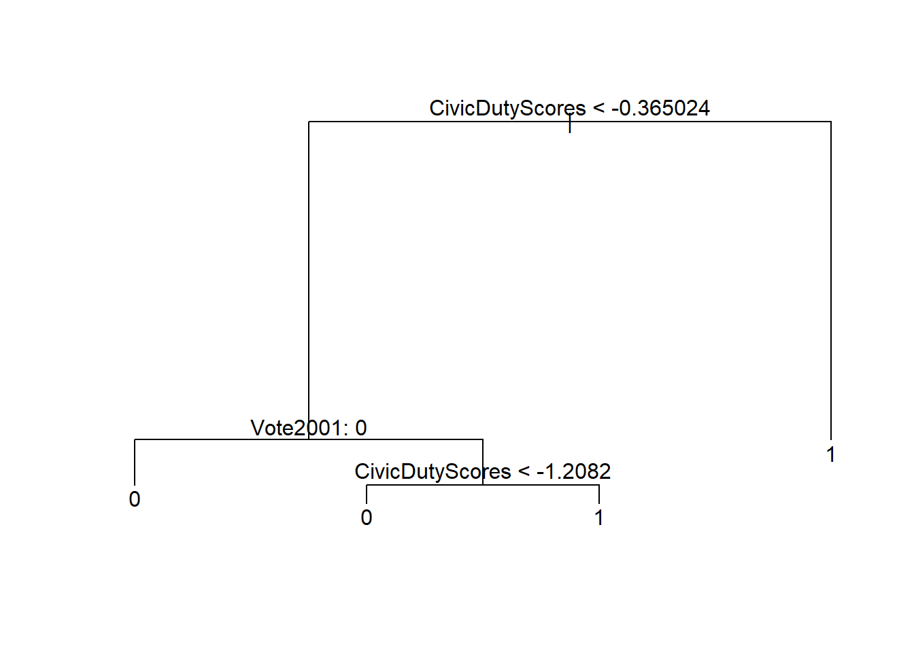
# predict outcomes
t2.pred <- predict(prune.t2, newdata = bes.test, type = "class")
# did we loose predictive power?
table(prediction = t2.pred, truth = turnout.test)## truth
## prediction 0 1
## 0 193 73
## 1 168 981mean( t2.pred == turnout.test )## [1] 0.829682# Brier score
t2.pred <- predict(t2, newdata = bes.test, type = "vector")[,2]
mean( (t2.pred - turnout.test)^2 ) ## [1] 0.1292594We still correctly classify \(83\%\) of the observations and the brier score remained the same.
In the previous plots, we saw that we should do worse if we prune back the tree to have less than 4 terminal nodes. We examine what happens if we overdo it.
# using "wrong" value for pruning (where the error rate does increase)
prune.t2 <- prune.misclass(t2, best = 2)
plot(prune.t2)
text(prune.t2, pretty = 0)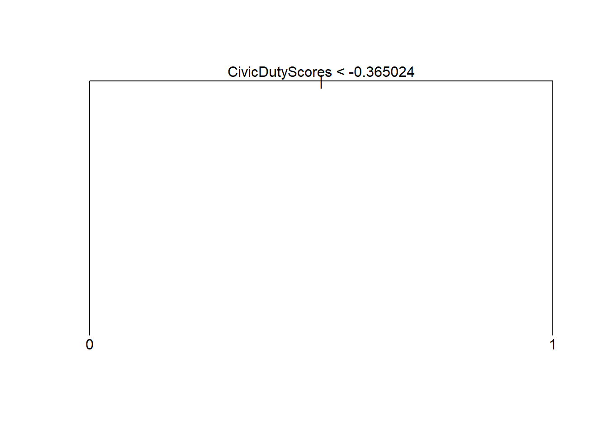
# predict outcomes based on a tree that is too small
t2.pred <- predict(prune.t2, newdata = bes.test, type = "class")
table(prediction = t2.pred, truth = turnout.test)## truth
## prediction 0 1
## 0 252 185
## 1 109 869# our predictive power decreased
mean( t2.pred == turnout.test )## [1] 0.7922261# brier score
t2.pred <- predict(prune.t2, newdata = bes.test, type = "vector")[,2]
mean( (t2.pred - turnout.test)^2 ) ## [1] 0.1439949We see that our test error increases.
Regression Trees
We predict the continuous variable Income. The plot of the regression tree is similar. However, in the terminal nodes the mean values of the dependent variable for that group are displayed rather than the class labels.
# grow a regression tree
set.seed(123)
reg.t1 <- tree(Income ~ ., data = bes, subset = train)
summary(reg.t1)##
## Regression tree:
## tree(formula = Income ~ ., data = bes, subset = train)
## Variables actually used in tree construction:
## [1] "edu19plus" "Age" "Telephone"
## Number of terminal nodes: 6
## Residual mean deviance: 3.659 = 10030 / 2740
## Distribution of residuals:
## Min. 1st Qu. Median Mean 3rd Qu. Max.
## -6.8830 -1.1430 0.1174 0.0000 1.2990 9.3210# plot regression tree
plot(reg.t1)
text(reg.t1, pretty = 0)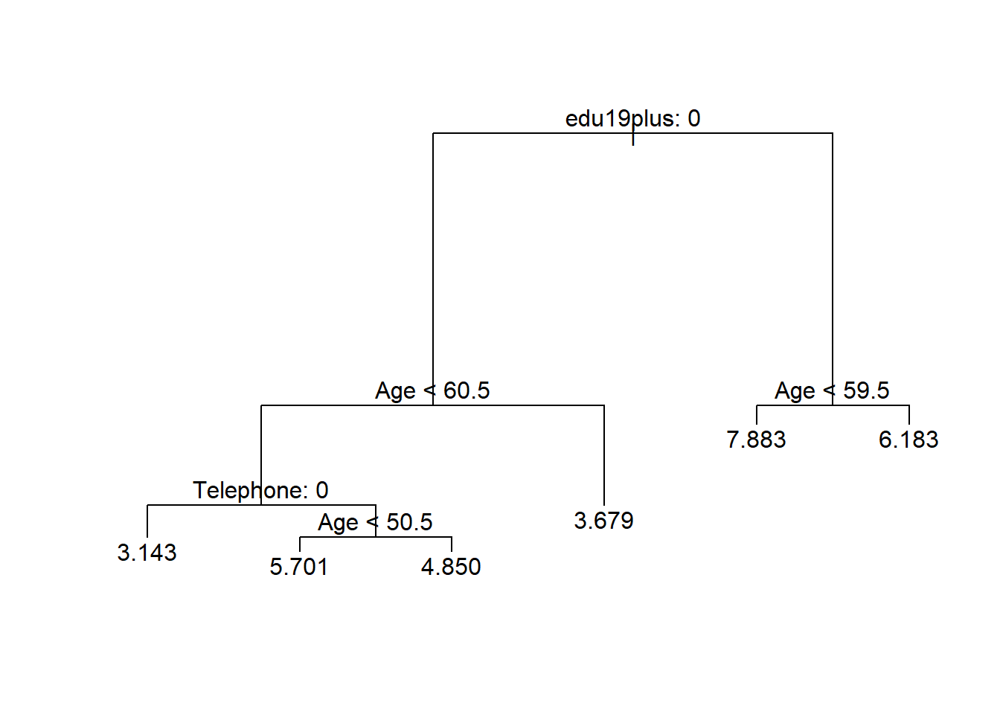
# examin the tree objext
t1## node), split, n, deviance, yval, (yprob)
## * denotes terminal node
##
## 1) root 4161 4763.0 1 ( 0.25931 0.74069 )
## 2) CivicDutyIndex < 19.5 3066 2446.0 1 ( 0.13666 0.86334 )
## 4) Vote2001: 0 243 333.4 1 ( 0.44033 0.55967 ) *
## 5) Vote2001: 1 2823 1963.0 1 ( 0.11052 0.88948 )
## 10) CivicDutyIndex < 16.5 1748 950.8 1 ( 0.07723 0.92277 ) *
## 11) CivicDutyIndex > 16.5 1075 961.7 1 ( 0.16465 0.83535 ) *
## 3) CivicDutyIndex > 19.5 1095 1471.0 0 ( 0.60274 0.39726 )
## 6) Vote2001: 0 429 391.4 0 ( 0.82984 0.17016 ) *
## 7) Vote2001: 1 666 918.2 1 ( 0.45646 0.54354 )
## 14) polinfoindex < 5.5 356 483.4 0 ( 0.58427 0.41573 ) *
## 15) polinfoindex > 5.5 310 383.7 1 ( 0.30968 0.69032 ) *We estimate test error of our tree.
# MSE
mean( (bes.test$Income - predict(reg.t1, newdata = bes.test))^2)## [1] 4.083786We apply pruning again to get a smaller more interpretable tree.
# cross-validation (to determine cutback size for pruning)
cv.reg.t1 <- cv.tree(reg.t1)
plot(cv.reg.t1)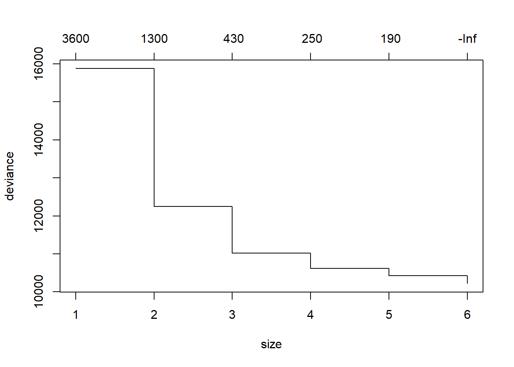
plot(cv.reg.t1$size, cv.reg.t1$dev, type = "b")
This is time we will increase error by pruning the tree. We choose four as a smaller tree size that does not increase RSS by much.
# pruning
prune.reg.t1 <- prune.tree(reg.t1, best = 4)
plot(prune.reg.t1)
text(prune.reg.t1, pretty = 0)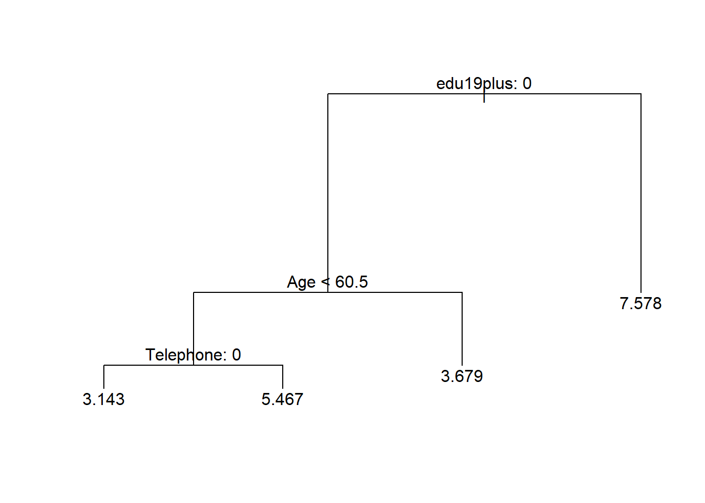
We can predict the outcome based on our pruned back tree. We will predict four values because we have four terminal nodes. We can illustrate the groups and their variance and estimate the MSE of our prediction.
# predict outcomes
yhat <- predict(prune.reg.t1, newdata = bes.test)
plot(yhat, bes.test$Income)
abline(0, 1)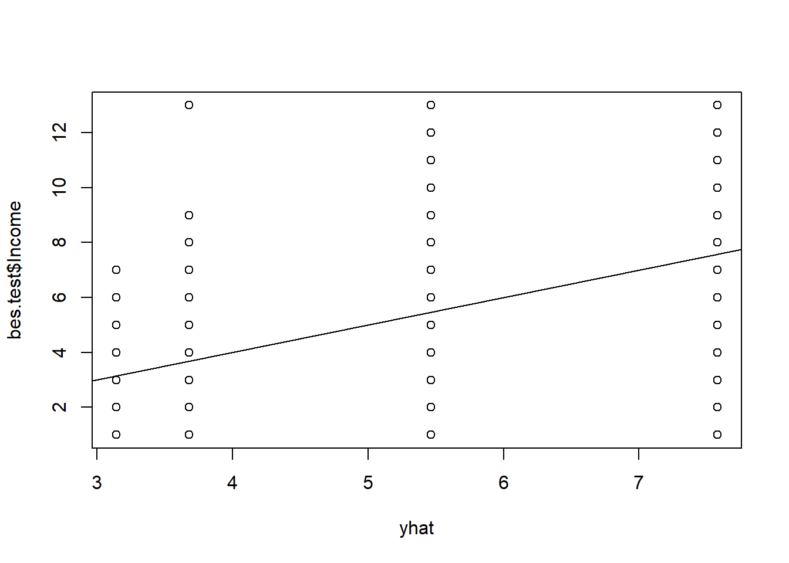
# MSE
mean((yhat - bes.test$Income)^2)## [1] 4.200642We increased our MSE by:
(4.200642 - 4.083786) / 4.083786## [1] 0.02861462\(3\%\).
Bagging and Random Forests
We now apply bagging and random forests to improve our prediction. Bagging is the idea that the high variance of a single bushy tree can be reduced by bootstapping samples and averaging over trees that were grown on the samples.
Note: Bagging gets an estimate of the test error for free as it always leaves out some observations when a tree is fit. The reported out-of-bag MSE is thus an estimate of test error. We also estimate test error separately on a test set. This is one particular test set, so the test error may vary.
In our run below the OOB MSE may be a better estimate of test error. It is reported to be lower than our test error estimate.
library(randomForest)## randomForest 4.6-12## Type rfNews() to see new features/changes/bug fixes.bag1 <- randomForest(Income ~ . , mtry = 19, data = bes, subset = train, importance = TRUE)
bag1##
## Call:
## randomForest(formula = Income ~ ., data = bes, mtry = 19, importance = TRUE, subset = train)
## Type of random forest: regression
## Number of trees: 500
## No. of variables tried at each split: 19
##
## Mean of squared residuals: 3.545845
## % Var explained: 38.59# predict outcome, illustrate, MSE
yhat.bag <- predict(bag1, newdata = bes.test)
plot(yhat.bag, bes.test$Income)
abline(0, 1) # line of 1:1 perfect prediction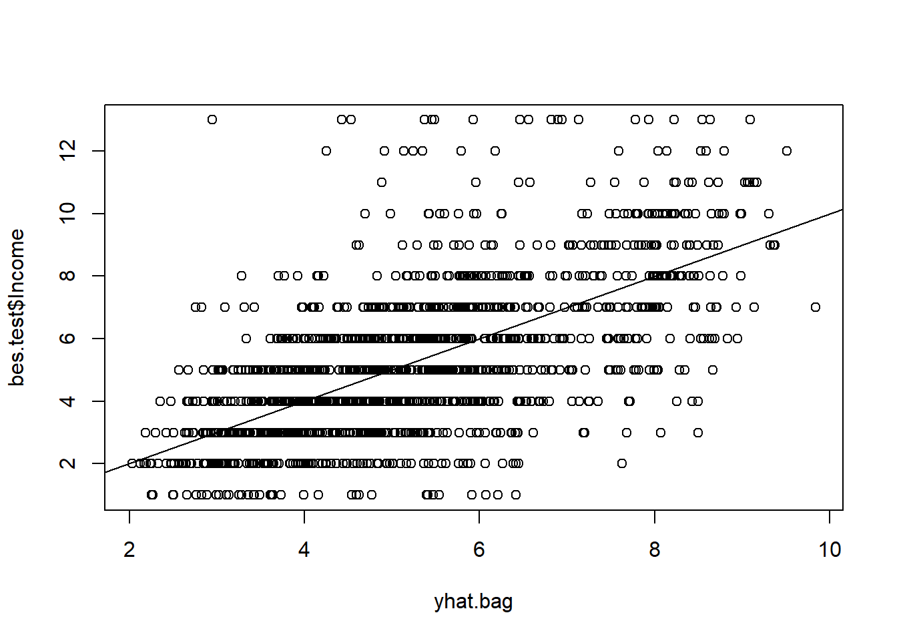
mean( (yhat.bag - bes.test$Income)^2 )## [1] 3.836317# reduction of error
(3.836317 - 4.200642) / 3.836317## [1] -0.09496739We reduce the error rate by \(9\%\) by using bagging.
We examine what happens when we reduce the number of trees we grow. The default is 500.
# dcrease the number of trees (defaults to 500)
bag2 <- randomForest(Income ~ ., mtry = 19, data = bes, subset = train, ntree = 25, importance = TRUE)
# predict outcome
yhat.bag <- predict(bag2, newdata = bes.test)
mean( (yhat.bag - bes.test$Income)^2 )## [1] 4.001648The result is that our rate increases substantially again.
We now apply random forest. The trick is to decorrelate the trees by randomly considering only a subset of variables at every split. We thereby reduce variance further. The number of variables argument mtry is a tuning parameter.
## Random Forest: not trying all vars at each split decorrelates the trees
set.seed(123)
# we try to find the optimal tuning parameter for the number of variables to use at each split
oob.error <- NA
val.set.error <- NA
for ( idx in 1:10){
rf1 <- randomForest(Income ~ ., mtry = idx, data = bes, subset = train, importance = TRUE)
# record out of bag error
oob.error[idx] <- rf1$mse[length(rf1$mse)]
cat(paste("\n", "Use ", idx, " variables at each split", sep=""))
# record validation set error
val.set.error[idx] <- mean( (predict(rf1, newdata = bes.test) - bes.test$Income)^2 )
}##
## Use 1 variables at each split
## Use 2 variables at each split
## Use 3 variables at each split
## Use 4 variables at each split
## Use 5 variables at each split
## Use 6 variables at each split
## Use 7 variables at each split
## Use 8 variables at each split
## Use 9 variables at each split
## Use 10 variables at each split# check optimal values for mtry
matplot( 1:idx, cbind(oob.error, val.set.error), pch = 19, col = c("red", "blue"),
type = "b", ylab = "MSE", frame.plot = FALSE)
legend("topright", legend = c("OOB", "Val. Set"), pch = 19, col = c("red", "blue"),
bty = "n")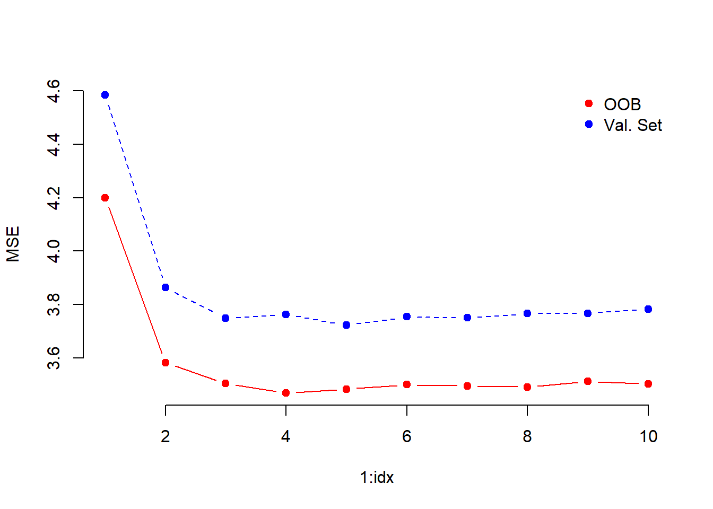
We use 4 as the optimal value for mtry.
rf1 <- randomForest(Income ~ ., mtry = 4, data = bes, subset = train, importance = TRUE)
# predict outcomes
yhat.rf <- predict(rf1, newdata = bes.test)
mean( (yhat.rf - bes.test$Income)^2 )## [1] 3.738068# reduction in error
(3.738068 - 3.836317) / 3.836317## [1] -0.02561024We reduced the error rate by another \(3\%\) by decorrelating the trees. We can exmine variable importance as well. Variable reduction is obtained by as the average that a predictor reduces error at splits within a tree where it was used and averaged again over all trees. Similarly, node purity is based on the gini index of how heterogenous a group becomes due to a split.
# which varaibles help explain outcome
importance(rf1)## %IncMSE IncNodePurity
## cs_id 2.06598543 1191.62963
## Turnout 10.63267089 187.08688
## Vote2001 4.74392742 134.49639
## Age 61.67167351 2726.49512
## Gender 7.75324398 270.15383
## PartyID -1.30764676 186.00643
## Influence 8.25220908 622.72510
## Attention 13.48430187 734.16131
## Telephone 41.55335004 420.28959
## LeftrightSelf 3.84799215 701.93854
## CivicDutyIndex 19.09482995 765.92377
## polinfoindex 12.62283324 761.74783
## edu15 22.02752039 856.04335
## edu16 11.78494180 286.72268
## edu17 8.09626481 109.68566
## edu18 8.90440198 102.36531
## edu19plus 53.12112919 2236.08056
## in_school 6.07771141 77.57576
## in_uni -0.02058015 51.77373
## CivicDutyScores 18.09776217 1145.64391# importance plot
varImpPlot(rf1)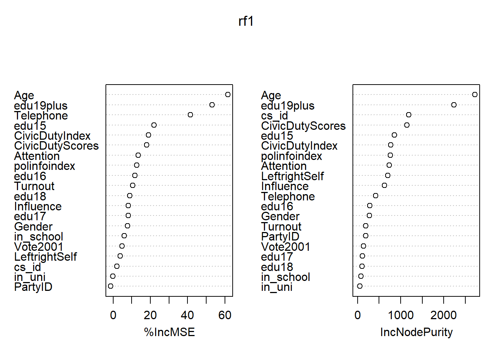
Boosting
library(gbm)## Loading required package: survival## Loading required package: lattice## Loading required package: parallel## Loaded gbm 2.1.3set.seed(1234)We run gradient boosting. The tuning parameters are the tree size. Tree size is directly related to the second tuning parameter: the learning rate. When the learning rate is smaller, we need more trees. The third tuning parameter interaction.depth determines how bushy the tree is. Common choices are 1, 2, 4, 8. When interaction depth is 1, each tree is a stump. If we increase to two we can get bivariate interactions with 2 splits and so. A final parameter that is related to the complexity of the tree could be minimum number of observations in the terminal node which defaults to 10.
# gradient boosting
gb1 <- gbm(Income ~ ., data = bes[train, ],
distribution = "gaussian",
n.trees = 5000,
interaction.depth = 4,
shrinkage = 0.001)
summary(gb1)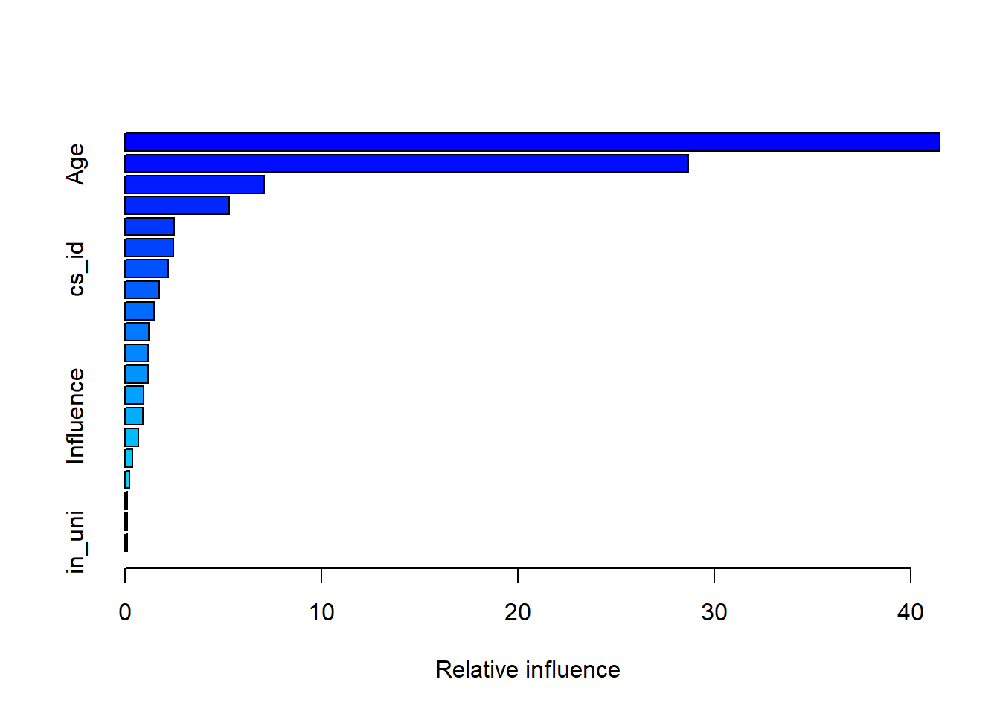
## var rel.inf
## edu19plus edu19plus 41.4726490
## Age Age 28.6747586
## Telephone Telephone 7.0882505
## polinfoindex polinfoindex 5.3053648
## Gender Gender 2.5211165
## edu15 edu15 2.4673348
## cs_id cs_id 2.1982736
## LeftrightSelf LeftrightSelf 1.7370627
## Turnout Turnout 1.4784065
## in_school in_school 1.2178698
## CivicDutyScores CivicDutyScores 1.1787687
## Attention Attention 1.1600579
## edu16 edu16 0.9406745
## Influence Influence 0.9211903
## CivicDutyIndex CivicDutyIndex 0.6809589
## Vote2001 Vote2001 0.3880845
## edu17 edu17 0.2379545
## edu18 edu18 0.1226292
## PartyID PartyID 0.1054473
## in_uni in_uni 0.1031473# partial dependence plots
plot(gb1, i = "edu19plus")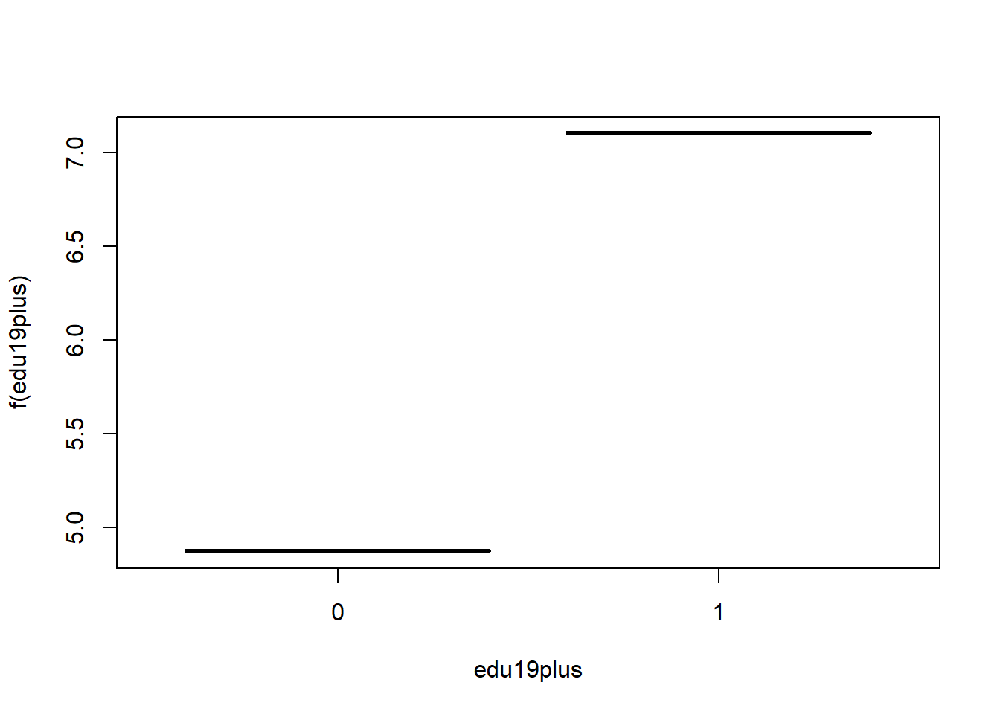
plot(gb1, i = "Age")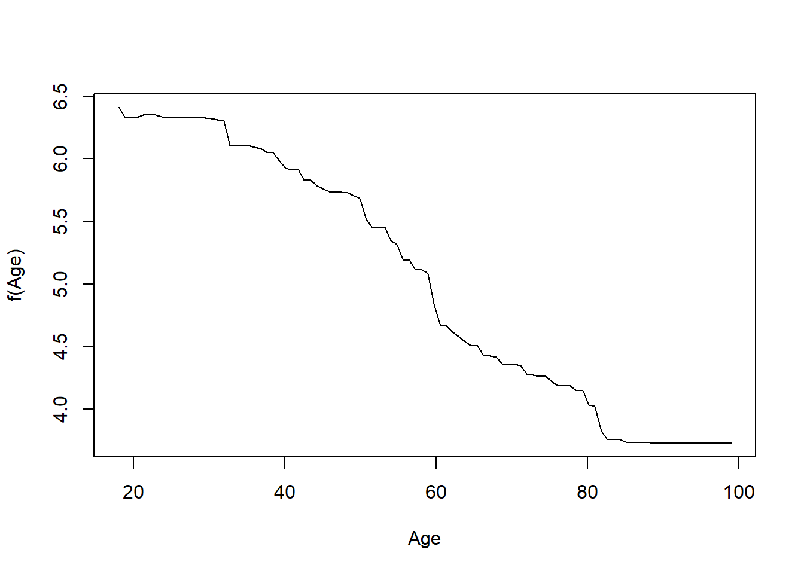
# predict outcome
yhat.gb <- predict(gb1, newdata = bes.test, n.trees = 5000)
mean( (yhat.gb - bes.test$Income)^2 )## [1] 3.720392# reduction in error
(3.716085 - 3.738321) / 3.738321## [1] -0.005948125We reduce the error rate by roughly another half percent.
Exercises
Q1
We applied random forests for varying mtry. In addition vary the number of trees and create a plot that displays both test error and OOB error.
Q2
Looking at the Carseats data from the ISLR package we will seek to predict Sales using regression trees and related approaches, treating the response as a quantitative variable.
- Split the data set into a training set and a test set.
- Fit a regression tree to the training set. Plot the tree, and interpret the results. What test error rate do you obtain?
- Use cross-validation in order to determine the optimal level of tree complexity. Does pruning the tree improve the test error rate?
- Use the bagging approach in order to analyze this data. What test error rate do you obtain? Use the
importance()function to determine which variables are most important. - Use random forests to analyze this data. What test error rate do you obtain? Use the
importance()function to determine which variables are most important. Describe the effect of mm, the number of variables considered at each split, on the error rate obtained.
Q3
This problem involves the OJ dataset which is part of the ISLR package.
- Create a training set containing a random sample of 800 observations, and a test set containing the remaining observations.
- Fit a tree to the training data, with
Purchaseas the response and the other variables except forBuyas predictors. Use thesummary()function to produce summary statistics about the tree, and describe the results obtained. What is the training error rate? How many terminal nodes does the tree have? - Type in the name of the tree object in order to get a detailed text output. Pick one of the terminal nodes, and interpret the information displayed.
- Create a plot of the tree, and interpret the results.
- Predict the response on the test data, and produce a confusion matrix comparing the test labels to the predicted test labels. What is the test error rate?
- Produce a plot with tree size on the \(x\)-axis and cross-validated classification error rate on the \(y\)-axis.
- Which tree size corresponds to the lowest cross-validated classification error rate?
- Produce a pruned tree corresponding to the optimal tree size obtained using cross-validation. If cross-validation does not lead to selection of a pruned tree, then create a pruned tree with five terminal nodes.
- Compare the training error rates between the pruned and unpruned trees. Which is higher?
- Compare the test error rates between the pruned and unpruned trees. Which is higher?
Q4
We now use boosting to predict Salary in the Hitters dataset, which is part of the ISLR package.
- Remove the observations for whom the salary information is unknown, and then log-transform the salaries.
- Create a training set consisting of the first 200 observations, and a test set consisting of the remaining observations.
- Perform boosting on the training set with \(1,000\) trees for a range of values of the shrinkage parameter \(\lambda\). Produce a plot with different shrinkage values on the \(x\)-axis and the corresponding training set MSE on the \(y\)-axis.
- Produce a plot with different shrinkage values on the \(x\)-axis and the corresponding test set MSE on the \(y\)-axis.
- Compare the test MSE of boosting to the test MSE that results from applying two of the regression approaches seen in our discussions of regression models.
- Which variables appear to be the most important predictors in the boosted model?
- Now apply bagging to the training set. What is the test set MSE for this approach?
Q5
- Create a training set consisting of the first 1,000 observations, and a test set consisting of the remaining observations.
- Fit a boosting model to the training set with
Purchaseas the response and the other variables as predictors. Use 1,000 trees, and a shrinkage value of 0.01. Which predictors appear to be the most important? - Use the boosting model to predict the response on the test data. Predict that a person will make a purchase if the estimated probability of purchase is greater than 20%. Form a confusion matrix. What fraction of the people predicted to make a purchase do in fact make one? How does this compare with the results obtained from applying KNN or logistic regression to this data set?
Optional Exercise
Apply boosting, bagging, and random forests to a data set of your choice. Be sure to fit the models on a training set and to evaluate their performance on a test set. How accurate are the results compared to simple methods like linear or logistic regression? Which of these approaches yields the best performance?